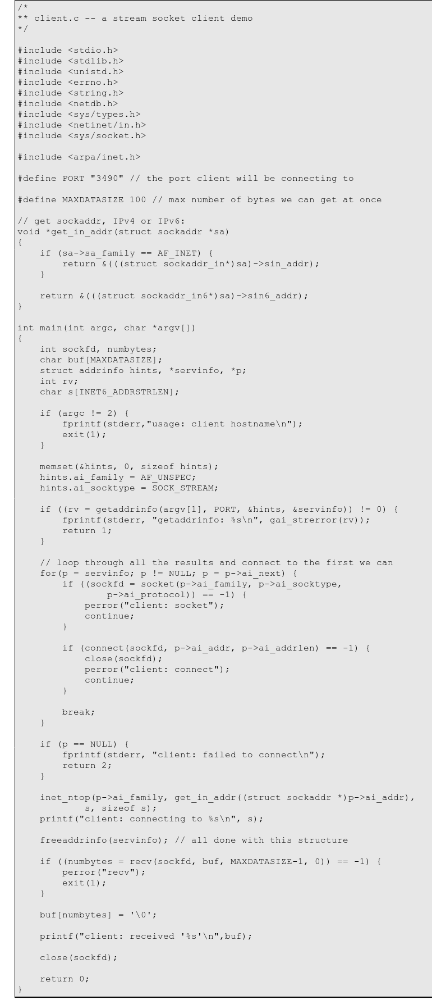

What's in a game?
Goal: Build an extremely simple messaging library on top of TCP
Initial plan: do it in C
A Simple Stream Server
A Simple Stream Client

New idea: Write it in Rust and compile to a C library
[Rust from C] FFI Resources
RustConf 2018 - Embedding Rust in C/C++ by Katharina
The Rust FFI Omnibus
The Rust paradox
Rust: Making easy things hard so that hard things can be easy
Overall experience: This feels like cheating
TODO: rust server/client examples here
TODO: basic ffi example here
Demo